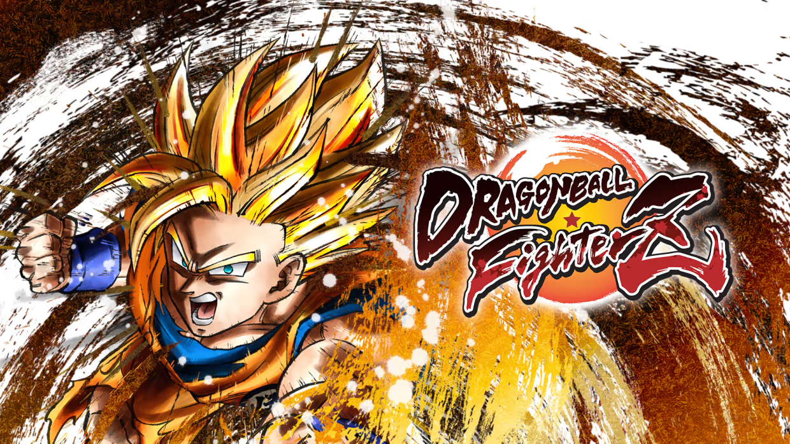
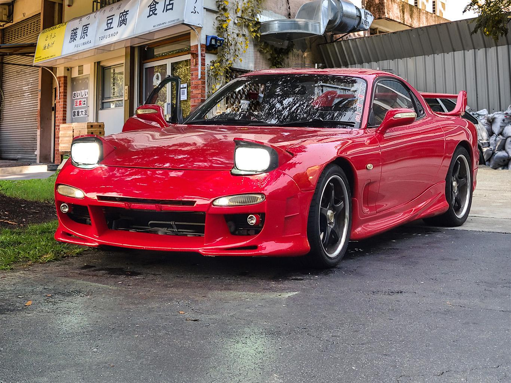
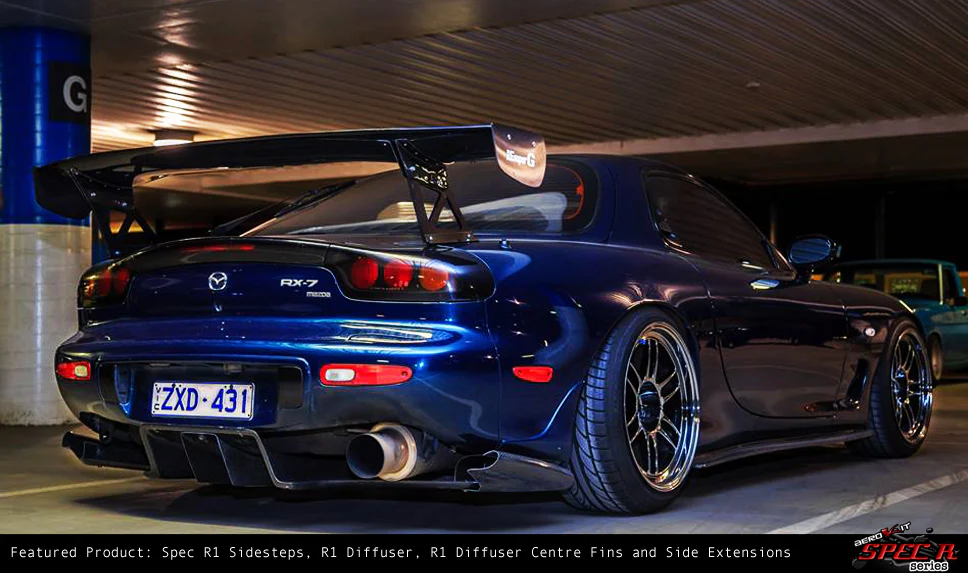
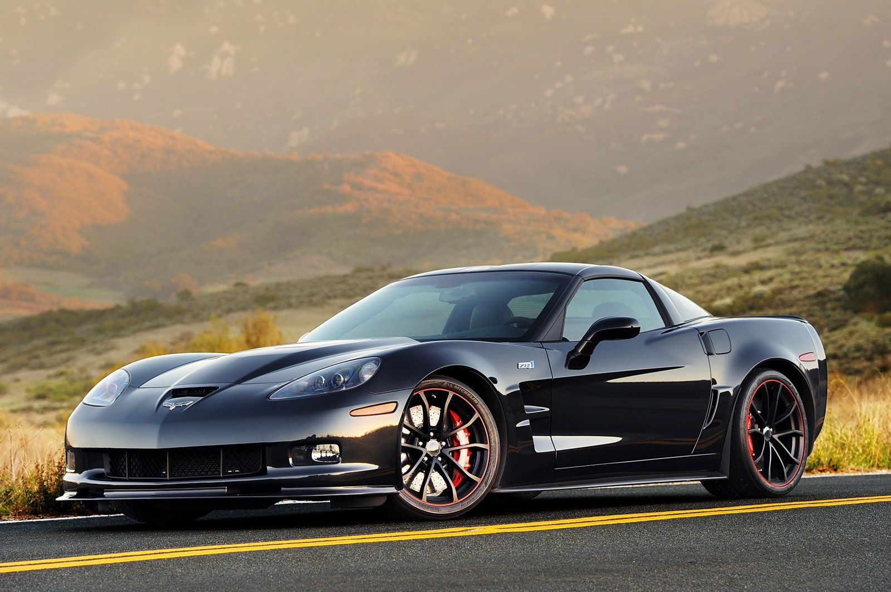
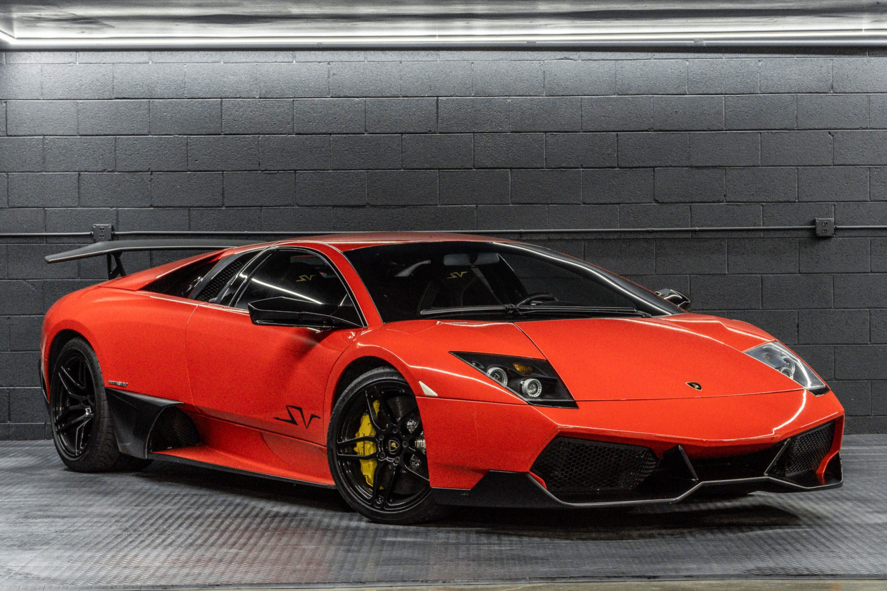
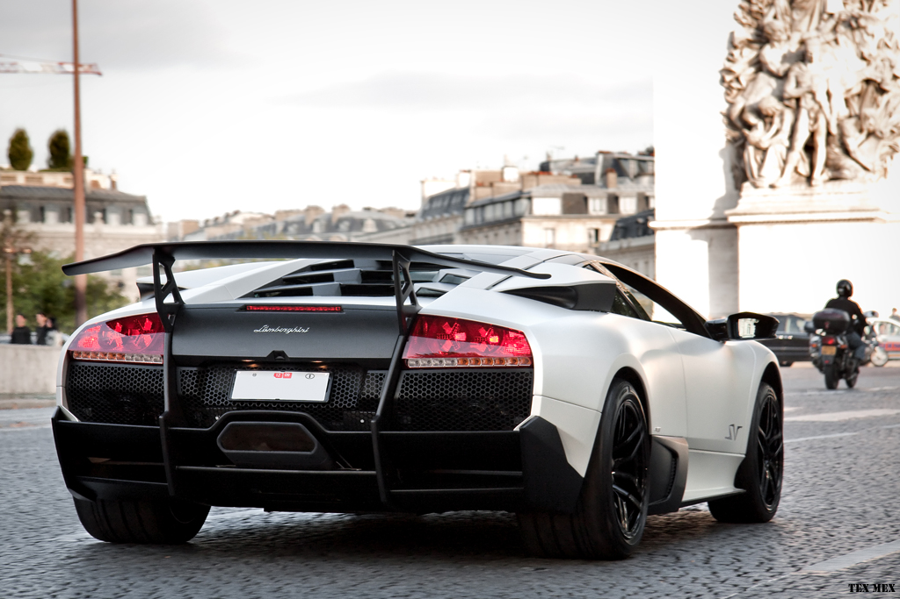
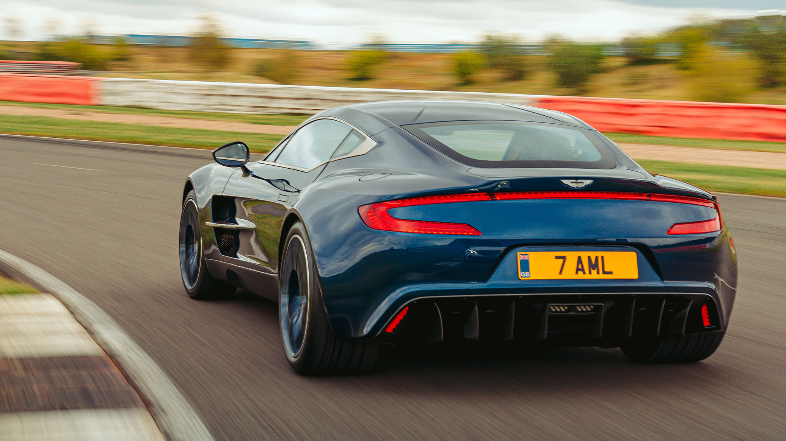
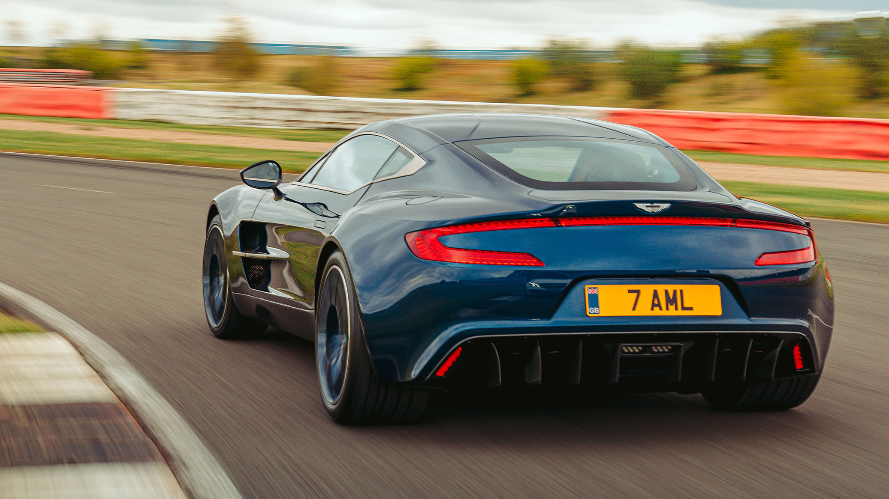

Video Games
I like these games because they are action packed and are very accessible for players of all skill levels. Super excited for Call of Duty Black Ops 6 coming out next month.
Foods
- Panda Express Orange Chicken
- Ube Bread
- Sushi
- Chicken dipped in Chick fil-a sauce with Rice
- Lil Ceasar's Cheesy Stuffed Crust Pizza
I can't put these foods in a specific order because it all depends on my appetite and mood, but these are in general what I enjoy eatin the most.
Cars
- Mazda Rx-7 FD
- Nissan 180sx
- Corvette C6
- Lamborghini Murcielago SV
- Aston Martin One-77
 




 
 
